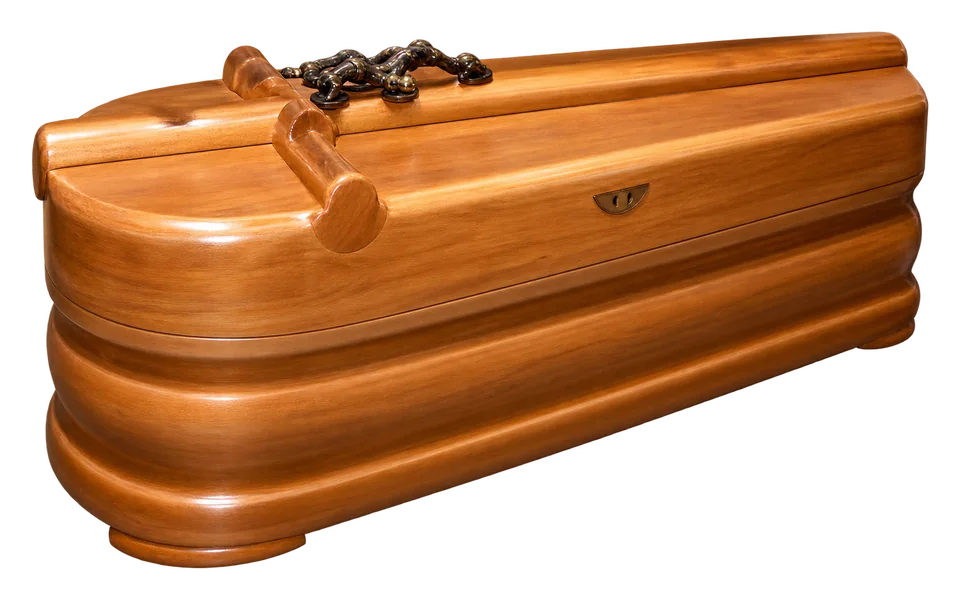
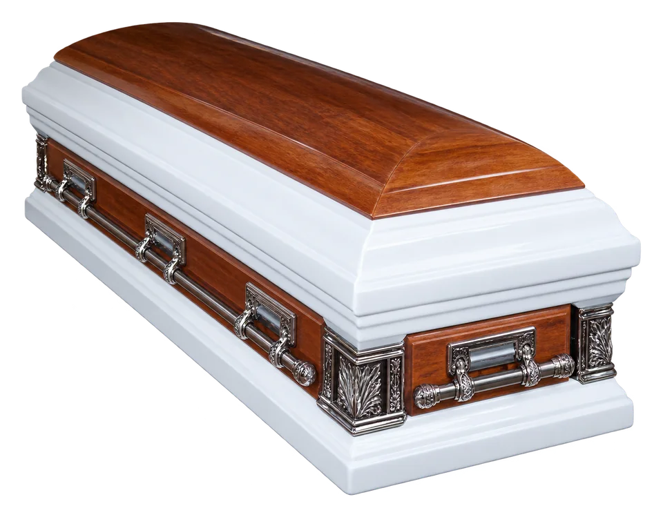
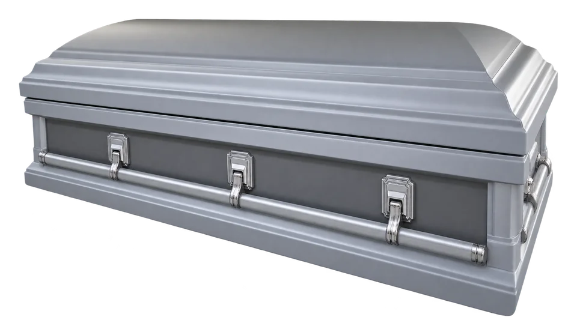
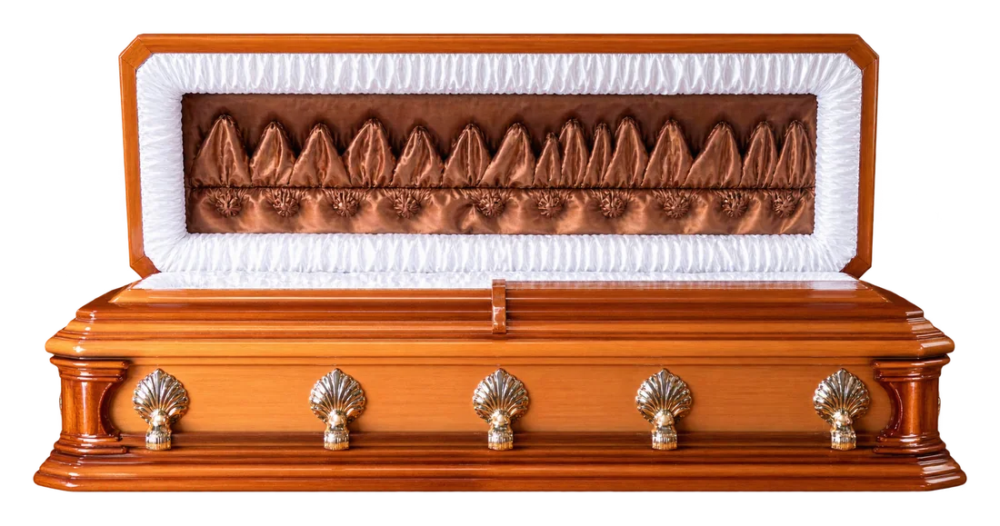
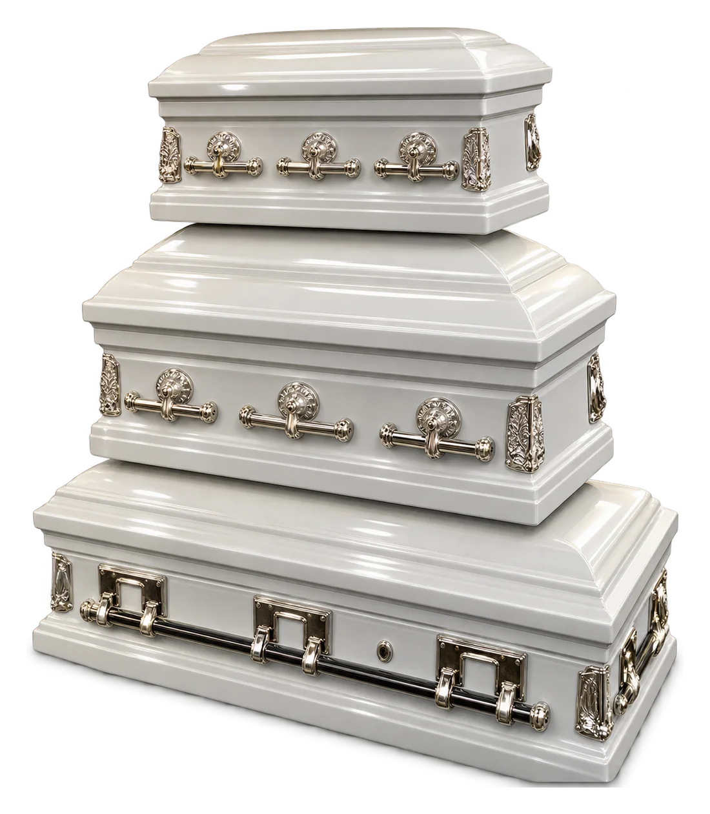
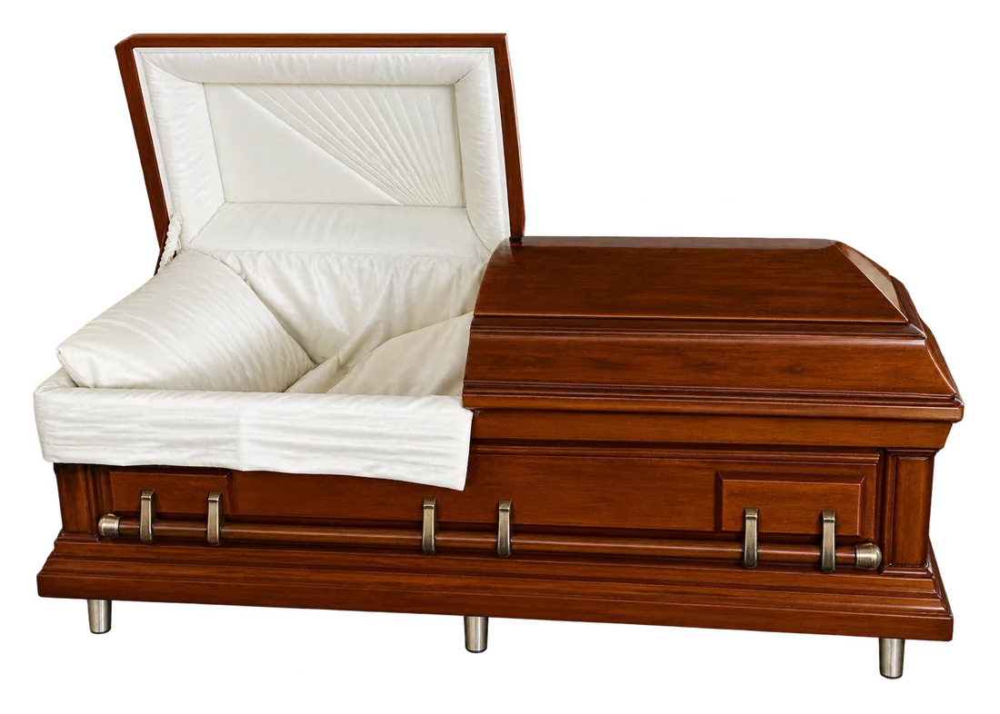
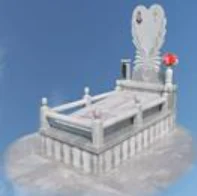
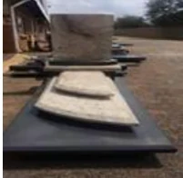
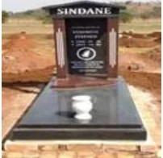
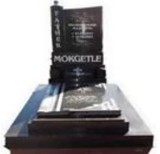

Polished timber
A warm woodgrain finish with shaped detailing.
Explore examples from Laphumikhwezi’s photo collection and ask our team about current availability, finishes and specifications.
A range of styles and finishes drawn from the supplied gallery. Contact the team to discuss current options.

A warm woodgrain finish with shaped detailing.

A light finish paired with a wood-tone lid.

A silver-grey finish with polished metal fittings.

A timber finish with a light, gathered interior.

A white finish with bright metal fittings.
A polished burgundy exterior with a blue lid panel.
A patterned finish shown alongside a burgundy option.

A wood finish with a light interior lining.
Images are examples only and do not indicate current stock or price.
A selection of upright, low-profile and ornamental memorial styles shown in the gallery.




Memorial photographs are examples from the supplied gallery. Ask our team about current designs, inscriptions, sizes and pricing.
Contact the team to ask what is currently available.